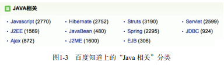
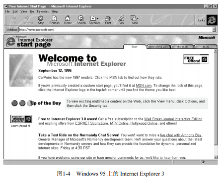

作为 Node.js 的基础，JavaScript 是一个完全为网络而诞生的语言。在今天看来，JavaScript 具有其他诸多语言不具备的优势，例如速度快、开销小、容易学习等，但在一开始它却并不 是这样。多年以来，JavaScript 因为其低效和兼容性差而广受诟病，一直是一个被人嘲笑的 “丑小鸭”，它在成熟之前经历了无数困难和坎坷，个中究竟，还要从它的诞生讲起。
JavaScript 首次出现在1995 年，正如现在的 Node.js 一样，当年 JavaScript 的诞生决不是 偶然的。在1992 年，一个叫 Nombas 的公司开发了“C减减”（C minus minus，Cmm）语言， 后来改名为 ScriptEase 。ScriptEase 最初的设计是将一种微型脚本语言与一个叫做 Espresso Page 的工具配合，使脚本能够在浏览器中运行，因此 ScriptEase 成为了第一个客户端脚本语言。
网景公司也想独立开发一种与 ScriptEase 相似的客户端脚本语言，Brendan Eich① 接受了 这一任务。起初这个语言的目标是为非专业的开发人员（如网站设计者），提供一个方便的 工具。大多数网站设计者没有任何编程背景，因此这个语言应该尽可能简单、易学，最终一 个弱类型的动态解释语言 LiveWire 就此诞生。LiveWire 没过多久就改名为 LiveScript 了，直 到现在，在一些古老的 Web 页面中还能看到这个名字。
在JavaScript 诞生之前，Java applet ② 曾经被热炒。之前 Sun 公司一直在不遗余力地推广 Java ，宣称 Java applet 将会改变人们浏览网页的方式。然而市场并没有像 Sun 公司预期的那 样好，这很大程度上是因为 Java applet 速度慢而且操作不便。网景公司的市场部门抓住了这 个机遇，与 Sun 合作完成了 LiveScript 实现，并在网景的Navigator 2.0 发布前，将 LiveScript 更名为 JavaScript 。网景公司为了取得 Sun 公司的支持，把 JavaScript 称为 Java applet 和 HTML 的补充工具，目的之一就是为了帮助开发者更好地操纵 Java applet 。
Netscape 决不会预料到当年那个市场策略带来的副作用有多大。多年来，到处都有人混 淆 Java 和 JavaScript 这两个不相干的语言。两者除了名字相似和历史渊源之外，几乎没有任 何关系。现在看来，从论坛到邮件列表，从网站到图书馆，能把 Java 和 JavaScript 区分开的 倒是少数 ③ 。图1-3 是百度知道上的“Java 相关”分类。
图1-3 百度知道上的“Java 相关”分类
——————————① Brendan Eich 被人称为 JavaScript 之父，他完全没想到自己当年无心设计的一个语言会成为今天最流行的网络脚 本语言。 ② applet 的意思是“小程序”，它是 Java 的一个客户端组件，需要在“容器”中运行，通常浏览器会充当这个容器。 ③ Brendan Eich 为此抱憾不已，他后来在一个名为“ JavaScript at Ten Years ”（ JavaScript 这10年）的演讲稿中写道： “ Don’t let marketing name your language. ”（不要为了营销决定语言名称）。
就在网景公司如日中天之时，微软的 Internet Explorer 3 随 Windows 95 OSR2 捆绑销售 的策略堪称一颗重磅炸弹，轻松击败了强劲的对手——网景公司的Navigator。尽管这个做法 致使微软后来声名狼藉（以及一系列的反垄断诉讼），但 Internet Explorer3 的成功却有目共 睹，其成功不仅仅在于市场营销策略，也源于产品本身。Internet Explorer 3 是一个划时代产 品，因为它也实现了类似于 JavaScript 的客户端语言—— JScript，除此之外还有微软的“老 本行”VBScript 。JScript 的诞生成为 JavaScript 发展的一个重要里程碑，标志了动态网页时 代的全面到来。图1-4 是 Windows 95 上的 Internet Explorer 3 。
 图1-4 Windows 95 上的 Internet Explorer 3最初 JavaScript 并没有一个标准，因此在不同浏览器间有各种各样的兼容性的问题。 Internet Explorer 占领市场以后这个问题变得更加尖锐，因此 JavaScript 的标准化势在必行。 在1996年，JavaScript 标准由诸多软件厂商共同提交给ECMA （欧洲计算机制造商协会）。 ECMA 通过了标准 ECMA-262，也就是 ECMAScript 。紧接着国际标准化组织也采纳了 ECMAScript 标准（ISO-16262 ）。在接下来的几年里，浏览器开发者们就开始以 ECMAScript 作为规范来实现 JavaScript 解析引擎。
ECMAScript 诞生至今已经有了多个版本，最新的版本是在2009年12月发布的 ECMAScript 5，而到2012 年为止，业界普遍支持的仍是 ECMAScript 3 ，只有新版的 Chrome 和 Firefox 实现了 ECMAScript 5 。
ECMAScript 仅仅是一个标准，而不是一个语言的具体实现，而且这个标 准不像 C++ 语言规范那样严格而详细。除了 JavaScript 之外，ActionScript ① 、 QtScript ② 、WMLScript ③ 也是 ECMAScript 的实现。
尽管有 ECMAScript 作为 JavaScript 的语法和语言特性标准，但是关于 JavaScript 其他方 面的规范还是不明确，同时不同浏览器又加入了各自特有的对象、函数。这也就是为什么这 么多年来同样的 JavaScript 代码会在不同的浏览器中呈现出不同的效果，甚至在一个浏览器 中可以执行，而在另一个浏览器中却不可以。
要注意的是，浏览器的兼容性问题并不只是由 JavaScript 的兼容性造成的，而是 DOM 、 BOM、CSS 解析等不同的行为导致的。万维网联盟（World Wide Web Consortium，W3C） 针对这个问题提出了很多标准建议，目前已经几乎被所有厂商和社区接受，浏览器的兼容性 问题迅速得到了改善。
第一款 JavaScript 引擎是由 Brendan Eich 在网景的 Navigator 中开发的，它的名字叫做 SpiderMonkey 。SpiderMonkey 在这之后还用作 Mozilla Firefox 1.0~3.0 版本的引擎，而从 Firefox 3.5 开始换为 TraceMonkey ，4.0版本以后又换为 JaegerMonkey。Google Chrome 的 JavaScript 引擎是 V8 ，同时 V8 也是 Node.js 的引擎。微软从 Internet Explorer 9 开始使用其 新的 JavaScript 引擎 Chakra。 ④
过去，JavaScript 一直不被人重视，很大程度上是因为它效率不高——不仅速度慢，还 占用大量内存。但如今JavaScript的效率却令人刮目相看。历史总是如此相似，正如没有 Shockley 发明晶体管就没有电子科技革命一样，如果没有2008 年以来的 JavaScript 引擎革命， Node.js 也不会这么快诞生。
—————————— ① ActionScript 最初是 Adobe 公司 Flash 的一部分，用于控制动画效果，现在已经被广泛应用在 Adobe 的各项产品中。 ② QtScript 是 Qt 4.3.0 以后引入的专用脚本工具。 ③ WMLScript 是 WA P 协议的一部分，用于扩展 WML （Wireless Markup Language）页面。 ④ 除此以外还有 KJS （用于 Konqueror ）、 Nitro（用于 Safari ）、 Carakan （用于Opera）等 JavaScript 引擎。 10 第 1 章 Node.js简介2008年 Mozilla Firefox 的一次改动，使 Firefox 3.0 的 JavaScript 性能大幅提升，从而引发 了 JavaScript 引擎之间的效率竞赛。紧接着 Web Kit ① 开发团队宣告了 Safari 4 新的 JavaScript 引擎 SquirrelFish（后来改名 Nitro ）可以大幅度提升脚本执行速度。Google Chrome 刚刚诞 生就因它的 JavaScript 性能而备受称赞，但随着 WebKit 的 Squirrelfish Extreme 和 Mozilla 的 TraceMonkey 技术的出现，Chrome 的 JavaScript 引擎速度被超越了，于是 Chrome 2 发布时 使用了更快速的 V8 引擎。V8 一出场就以其一骑绝尘般的速度打败了所有对手，一度成为 JavaScript 引擎的速度之王。于是其他浏览器的开发者开始奋力追赶，与以往不同的是， Internet Explorer 也加入了这次竞赛，并取得了不俗的成绩。
时至今日，各个 JavaScript 引擎的效率已经不相上下，通过不同引擎根据不同测试基准 测得的结果各有千秋。更有趣的是，JavaScript 的效率在不知不觉中已经超越了其他所有传 统的脚本语言，并带动了解释器的革新运动。JavaScript 已经成为了当今速度最快的脚本语 言之一，昔日“丑小鸭”终于成了惊艳绝俗的“白天鹅”。
尽管如此，我们不能否认 JavaScript 还有很多不完美之处，譬如一些违反直觉的特性， 这几乎成了 JavaScript 遭受批评和攻击的焦点。如今 JavaScript 还在继续发展，ECMAScript 6 也正在起草中，更有像 CoffeeScript 这样专门为了弥补 JavaScript 语言特性的不足而诞生的 语言。Google 也专门针对客户端 JavaScript 不完美的地方推出了 Dart 语言。随着大规模的应 用推广，我们有理由相信 JavaScript 会变得越来越好。